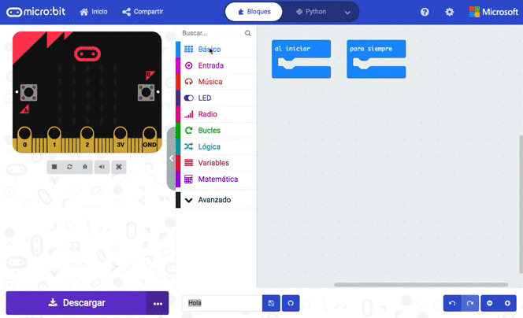

Ya conoces el entorno y las posibilidades de programación con Scratch; ahora vamos a presentarte un nuevo entorno de programación que nos va a permitir comunicarnos con nuestra placa.
Para ello, vamos a colocarnos en parejas y exploraremos este nuevo entorno que nos permitirá programar nuestra placa robótica.
¿Vamos?
1. Comparamos los dos entornos
En este ejercicio, vamos a comparar el entorno de programación que ya conocíamos (Scratch) con el nuevo entorno que vamos a usar (MakeCode) para ver cuáles son sus similitudes y diferencias.
Para ello, trabajando en pareja, debéis desplazar la pestaña central.
Compara los dos entornos:
- Qué similitudes ves entre los dos entornos de programación.
- ¿Ves dónde están los bloques de código?
- ¿Identificas la zona de programación? ¿Dónde crees que se arrastran los bloques de código?
- En MakeCode no tenemos escenario, pero ¿ves dónde está la imagen de la Micro:bit? ¿Para qué crees que puede servir?
- ¿Qué cosas nuevas o diferentes encuentras?
2. Hacemos un mapa del entorno de programación
Haz un croquis con los diferentes espacios en los que se divide el entorno de programación.
Pasos a seguir:
- Entra en la página: makecode.microbit.org
- Explora visualmente los diferentes espacios del entorno de programación.
- Prueba a clicar en los iconos, a arrastrar bloques y a tocar todo lo que quieras, ¡los programas no se rompen!
- Realiza en tu cuaderno el croquis de las principales zonas del entorno de programación.
Lumen dice ¿Necesitas ayuda para configurar el idioma?
Si necesitas ayuda para cambiar el idioma, en la imagen tienes la ruta que tienes que seguir.

3. Revisamos las partes del entorno de programación
Pon en común con tu grupo cuáles son las partes del entorno de programación .
¡Vamos a comprobarlo! Cuando terminéis de decir las partes en las que se divide el entorno, id pulsando la siguiente imagen interactiva para comprobar si habéis acertado.
Lumen dice ¿Necesitas una imagen con las partes del entorno?
Aquí tienes una imagen con las diferentes partes del entorno de programación.

4. Exploramos los bloques de programación

Vamos a hacer un tour por los distintos bloques de programación.
Pasos a realizar:
- Entra en la página: makecode.microbit.org.
- ¿Qué nuevas categorías ves? Observa que están diferenciados por colores.
- En primer lugar vamos a la categoría Básicos.
- ¿Identificas para qué sirven algunos bloques?
- ¿Qué crees que pueden hacer los bloques Mostrar icono y mostrar cadena en tu placa?
- Prueba a arrastrarlos a la zona de programación.
- Entra en el menú Bucles ¿Qué bloques te son familiares?
- Entra en menú Lógica, seguro que los reconoces, ¿verdad?
- Pasamos ahora al menú Variables. ¿Se parece al que conocemos de Scratch?
- Trata de identificar qué bloques se relacionan con las entradas de nuestra placa y qué bloques se relacionan con las salidas. Por ejemplo el bloque Al pulsar A, se relaciona con la entrada el Pulsador A.
Motus dice ¿Te has emocionado con esta actividad?
Una actividad de clase puede hacernos sentir de muchas maneras: confundido, aliviada, inseguro, tensa, alegre, orgullosa, enfadado…
La forma en la que respondes ante una actividad puede decirte muchas cosas sobre ti:
- Si te sientes confundido o insegura, es porque se trata de una actividad nueva que no sabes muy bien cómo resolver.
- Si te sientes contenta, alegre u orgulloso, seguramente es porque sabes que serás capaz de hacerla muy bien.
- Si te sientes enfadada o tenso, es porque esa actividad es muy difícil o muy importante.
Conocer las emociones que sientes cuando vas a hacer una actividad te ayudará a:
- Pedir ayuda.
- Relajarte para contestarla.
- Pensar en cómo podrás contestarla.
¡Haz caso a tus emociones!
5. Comparando los bloques de Scratch y Micro:bit.
En este ejercicio están los bloques de Scratch en columnas y abajo los de Micro:bit. Tienes que colocar los bloques de Micro:bit sobre su equivalente en Scratch.
Lumen dice ¿Has tenido dificultades a la hora de clasificar los bloques?
En este enlace puedes ver más información sobre las funciones de los bloques de programación.
6. Clasificamos los bloques en entradas y salidas
Clasifica arrastrando los bloques según sirvan para controlar dispositivos de entrada o salida de la placa.